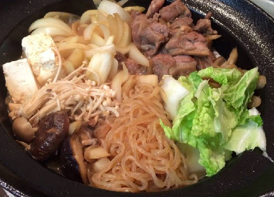
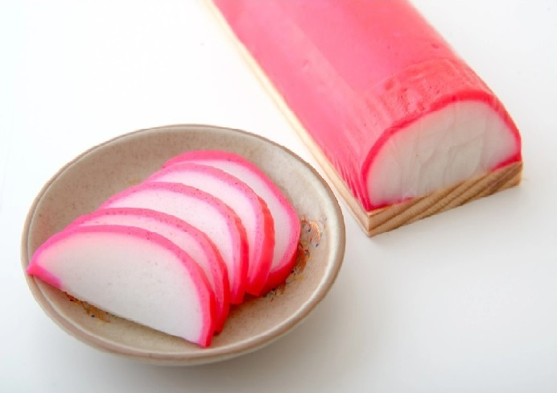

Last Wednesday I made Chicken Sukiyaki with my mom. I like to cut the tofu into small cubes. To top it off, I use kamaboko for some added color.
I plate my Sukiyaki in a deep ceramic bowl. I place the rice on the bottom and put the Sukiyaki on top.
